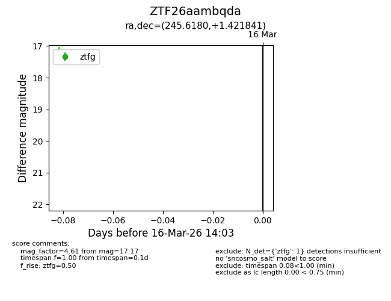
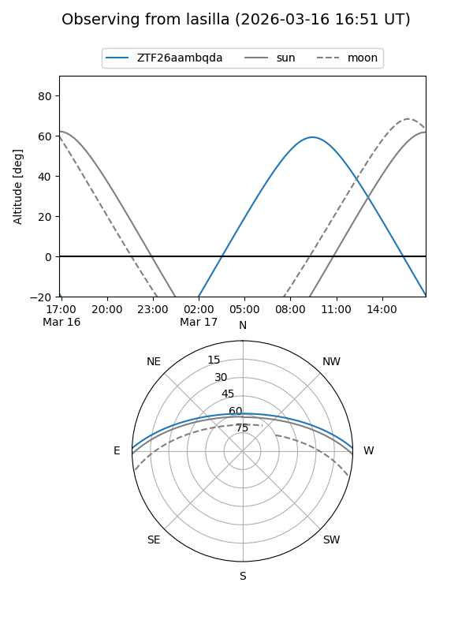
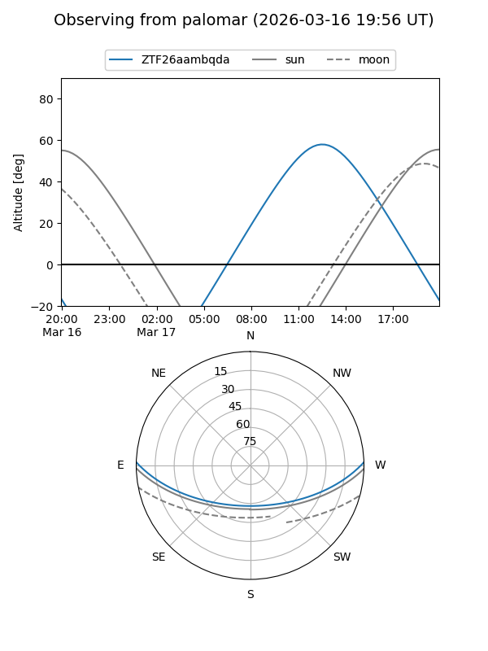

ZTF26aambqda
Target ZTF26aambqda at 2026-03-16 14:06
Aliases and brokers:
FINK: link
Lasair: link
ALeRCE: link
alt names
ZTF26aambqda (ztf,fink_ztf)
Coordinates:
equatorial (ra, dec) = 245.6180,+1.42184
equatorial (HMS+DMS) = 16:22:28.32,+01:25:18.63
galactic (l, b) = (15.2454,+33.34969)
Flags:
Photometry:
last ztfg=17.17
1 ztfg detections
Lightcurve

Visibility


Additional plots